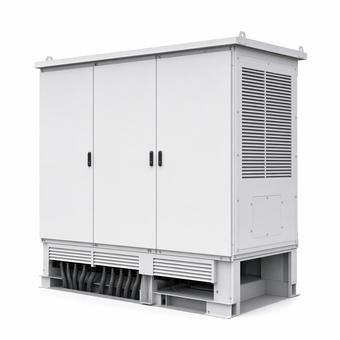

NEC 705: Supply-Side and Load-Side Connections
Where an inverter lands relative to the service disconnect decides which rules apply, and the familiar 120 percent allowance is only one of several paths. It also quietly depends on a breaker position that most summaries leave out.

Key takeaways
- The first question is not how big the inverter is. It is whether the connection lands on the supply side or the load side of the service disconnect.
- The 120 percent busbar allowance applies on the load side and depends on the backfeed breaker sitting at the opposite end of the bus from the main.
- Where that position is not met, the limit is 100 percent of the busbar, not 120.
- A supply-side connection is not subject to the busbar calculation at all, which is why it is the usual answer when a panel will not take the backfeed.
On this page · 7 sections
The question that comes first
Article 705 governs interconnecting a power production source — solar, storage, a generator operating in parallel — with an existing electrical system. Almost every practical question about it reduces to one thing: which side of the service disconnecting means the connection lands on.
A supply-side connection sits between the utility and the service disconnect, on conductors that have no overcurrent device ahead of them. A load-side connection sits downstream of the service disconnect, typically as a breaker in an existing panel. These are different rule sets, not two ways of describing the same thing, and the busbar arithmetic everyone knows belongs only to the second.
The reason the distinction exists is heat. On the load side, a panel busbar can now be fed from two directions at once, and the sum of what can be pushed into it may exceed what it was rated and listed for. On the supply side there is no busbar in between, so the problem does not arise and the question becomes one of service conductor and disconnect ratings instead.
The 120 percent allowance
On the load side, the familiar method permits the main overcurrent device plus the backfeed breaker to total up to 120 percent of the busbar rating. The arithmetic is simple and it is where most interconnection designs start.
Take a 200 A busbar with a 200 A main. 120 percent of 200 is 240 A, less the 200 A main leaves 40 A available for backfeed. Because inverter output is a continuous load carrying the 125 percent factor, that 40 A breaker corresponds to a maximum continuous inverter output of 40 / 1.25 = 32 A. That is the number the design is actually constrained to, and it is noticeably smaller than the breaker figure people quote.
Why 120 percent is allowed at all is worth understanding, because it explains the condition attached to it. The allowance assumes current enters the bus at one end and leaves at the other, so no single section of the busbar carries both contributions at once. That assumption is what the extra 20 percent is buying.
The 100 percent case
This is the part most summaries omit, and it is the one that fails an inspection.
The 120 percent allowance is conditional on the backfeed breaker being located at the opposite end of the busbar from the main. That position is what makes the end-to-end current assumption true. Put the backfeed breaker somewhere in the middle of the bus and a section of it can see the main contribution and the inverter contribution together, and the justification for exceeding 100 percent disappears.
Where the opposite-end position is not satisfied, the limit is 100 percent of the busbar rating. On that same 200 A panel with a 200 A main, 100 percent of 200 leaves nothing: zero available for backfeed. The design does not get smaller, it stops being available on that path.
That is the real reason so many residential retrofits end in a main breaker derate or a service upgrade. It is not that the panel is too small in general; it is that the breaker position available in that panel does not support the allowance the design was counting on.
The supply-side alternative
Where the load-side path will not work — the panel will not take more backfeed, the position is wrong, or the system is simply larger than the busbar arithmetic permits — a supply-side connection is the usual answer.
Because the connection is ahead of the service disconnect, the busbar calculation does not apply. There is no busbar in the path to protect. What governs instead is the service: the connection is made to the service conductors, and the questions become whether those conductors and the service equipment can carry the combined current, and what disconnecting means and overcurrent protection the source itself needs.
The practical cost is that supply-side work touches the service. It frequently means utility coordination, a meter pull, work on unfused conductors, and in many jurisdictions a different permit path. It solves the capacity problem and buys a scheduling problem.
Power control systems
There is a third route that the older guidance predates, and it is increasingly the answer on a battery project.
NEC 705.13 recognises power control systems: a listed system that actively monitors and limits current at the points it controls, so the design is constrained by what the system will actually permit rather than by the sum of the connected equipment ratings. Where one is used, the busbar and conductor calculations are performed against the control setting instead of against nameplate capacity.
This matters most where the connected equipment could in principle overload something but in practice never will, because the control system prevents it. A battery inverter that can export 48 A but is configured and listed to limit to 20 A at that point presents as 20 A. The arithmetic stops being about what the hardware can do and becomes about what the listed system allows, which is the same logic as the automatic load management permitted for EV charging.
Common mistakes
Quoting the 120 percent allowance without the opposite-end breaker position it depends on. Reading the available backfeed breaker size as the available inverter output, when the 125 percent continuous factor sits between them. Applying the busbar calculation to a supply-side connection, where no busbar is in the path. Assuming a supply-side connection is simply the easier option, when it is service work with its own coordination and permitting. Treating the busbar rating as the panel's main breaker rating, which are not always the same number. Citing subsection numbers from an edition the jurisdiction has not adopted — Article 705 was reorganized and the published sources disagree with each other on the paragraph citation as a result.
Frequently asked questions
What is the 120% rule for solar?
On a load-side connection, the main overcurrent device plus the backfeed breaker may total up to 120 percent of the busbar rating. On a 200 A busbar with a 200 A main that leaves 40 A for backfeed, which because of the 125 percent continuous-load factor corresponds to about 32 A of inverter output. The allowance is conditional on the backfeed breaker being at the opposite end of the bus from the main.
What happens if the backfeed breaker is not at the opposite end of the busbar?
The limit becomes 100 percent of the busbar rating rather than 120 percent. The extra 20 percent exists because current entering at one end and leaving at the other means no busbar section carries both contributions at once; a breaker in the middle of the bus breaks that assumption. On a 200 A bus with a 200 A main, the 100 percent case leaves nothing available for backfeed.
Does the 120% rule apply to a supply-side connection?
No. A supply-side connection is made between the utility and the service disconnecting means, so there is no panel busbar in the path to protect and the busbar calculation does not apply. What governs instead is the service conductor and equipment ratings, plus the disconnecting means and overcurrent protection for the source. It is the usual route when a panel cannot accept the backfeed.
What is a power control system under NEC 705.13?
A listed system that monitors and actively limits current at the points it controls, so the calculations are performed against the configured limit rather than the sum of equipment nameplate ratings. An inverter capable of 48 A but limited by a listed control system to 20 A at that point presents as 20 A. It is the same logic as automatic load management for EV charging, and it often resolves a battery interconnection that neither tap rule would permit.
Next steps
The queue and study process ahead of any of this is covered in the grid interconnection process, and the continuous-load factor behind the 125 percent step in the 80% rule.
Run the numbers
- kW to Amps CalculatorInverter output current from its power rating.
- Wire Size CalculatorThe conductor for that current, with both NEC checks.
Cite or link to this guide
Free to quote with attribution. Suggested citation: Voltfield Editorial Team, “NEC 705: Supply-Side and Load-Side Connections,” Voltfield, updated November 3, 2026. https://voltfield.org/guide-nec-705-supply-side-vs-load-side.html
Get new guides by email
One short email when a new guide or calculator is published, at most once a month. Your address is used for nothing else.